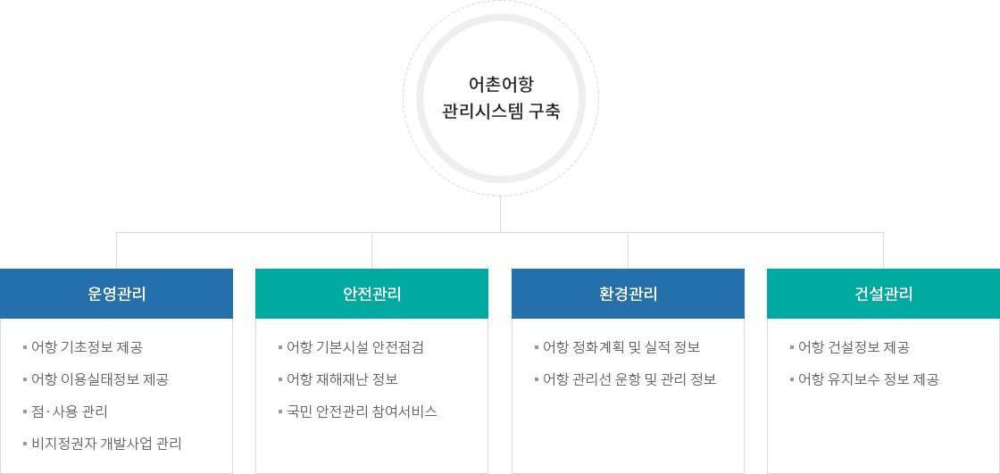
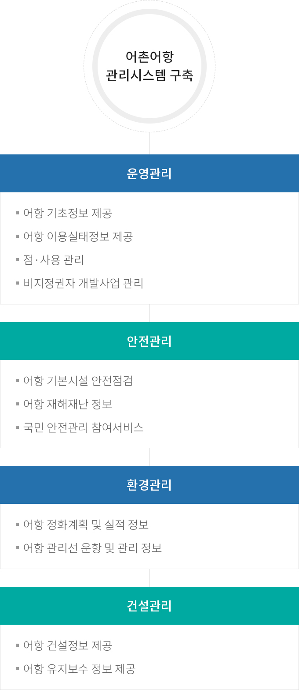

어촌어항관리시스템 구축
- 홈
- 사업소개
- 쾌적한 어항
- 어촌어항관리시스템 구축
사업목적
- 국가어항 운영관리, 안전 및 재해예방, 환경관리, 건설사업 관리 등 통합정보제공 시스템 마련으로 행정효율 제고 및 대국민 서비스 강화
- 어촌과 어항의 통합 연계발전방안 마련을 위한 기초 정보 제공
사업개요
| 구분 | 내용 |
|---|---|
| 사업기간 |
|
| 사업부서 |
|
| 법적근거 |
|
사업내용


어촌어항관리시스템 구축
- 운영관리
- 어항 기초정보 제공
- 어항 이용실태정보 제공
- 점·사용 관리
- 비지정권자 개발사업 관리
- 안전관리
- 어항 기본시설 안전점검
- 어항 재해재난 정보
- 국민 안전관리 참여서비스
- 환경관리
- 어항 정화계획 및 실적 정보
- 어항 관리선 운항 및 관리 정보
- 건설관리
- 어항 건설정보 제공
- 어항 유지보수 정보 제공